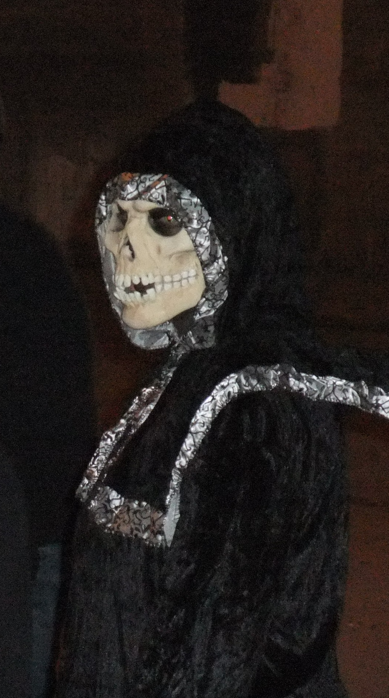
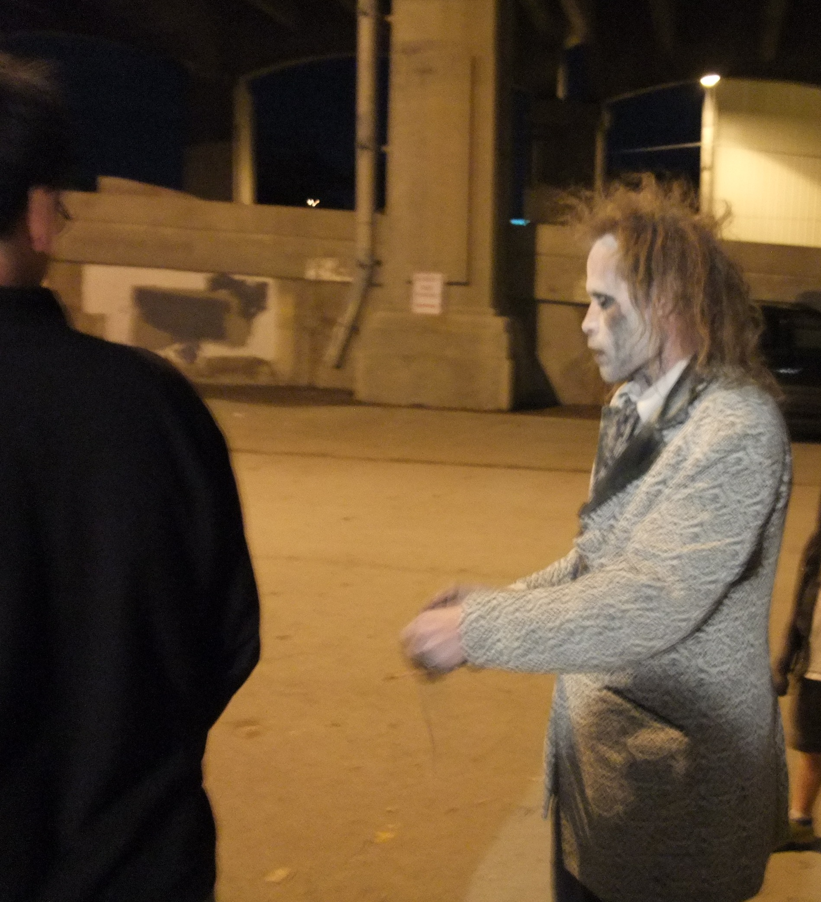
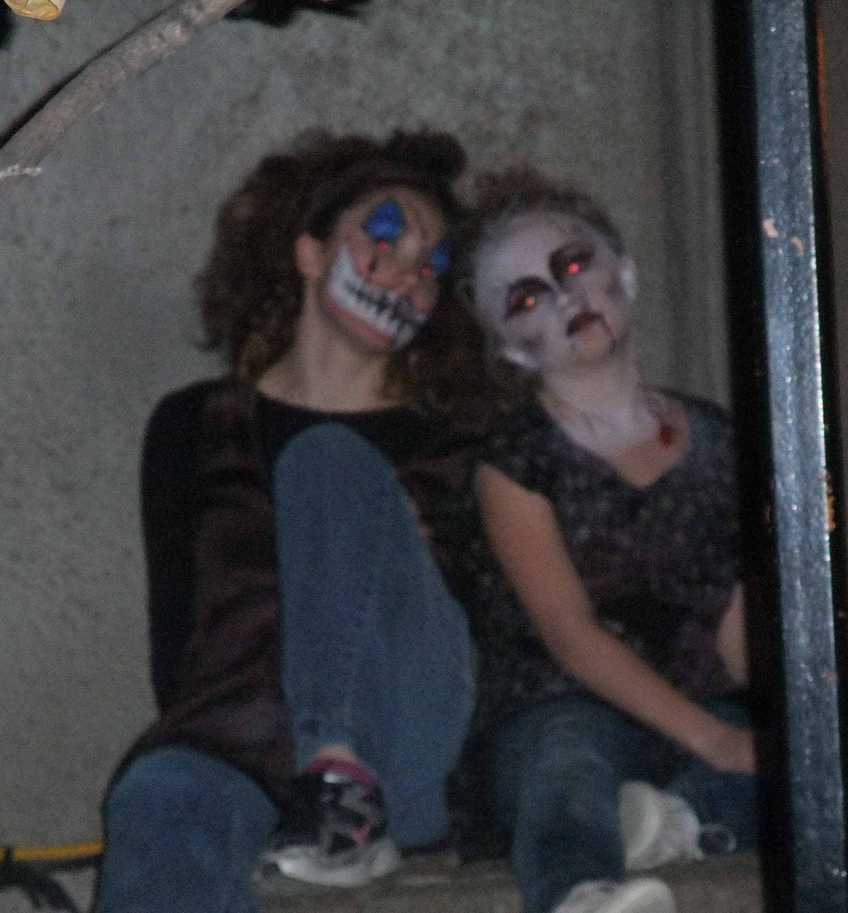
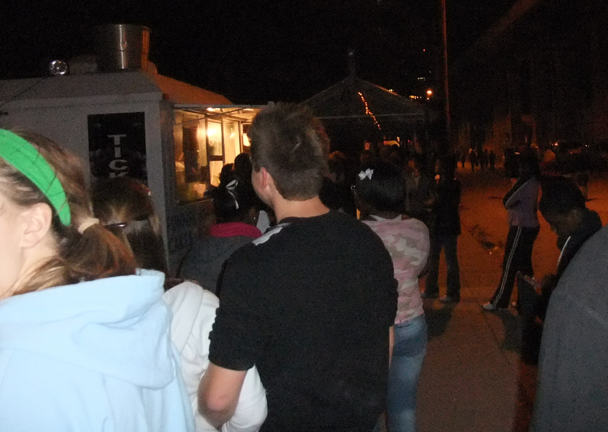
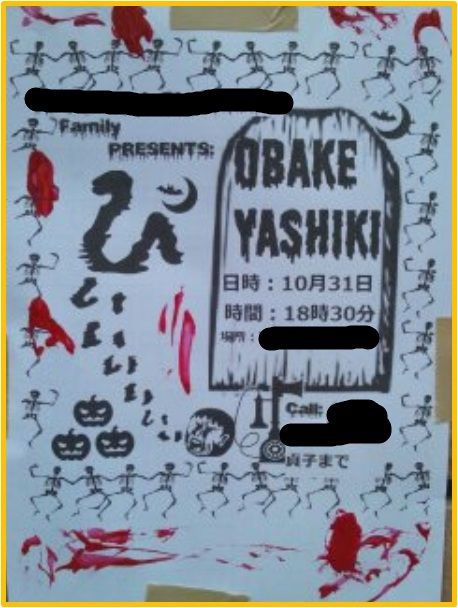

Halloween is Saturday, and I've been thinking about fear more than usual this year. Part of that is the season. The other part is that in four weeks, a book about a man who can't feel anything goes out into the world.
But let's start with the fun part.
When I was a kid, Halloween started at the store. My mom would take my younger brother and me to pick out our costumes, the kind that came in a cardboard box. I can't tell you how much I loved those boxes. Every year I would look forward to picking out my costume. One year I was Boba Fett, and I'm pretty sure I was the most dangerous bounty hunter on the block that night. Of course, that stupid string on the mask always broke, and the cheap plastic that made up the body of the costume would rip before the night was over, but they were so much fun to wear.
As I got older, I found something better than dressing up: paying money to be terrified. Kansas City had some great haunted houses, and I went every chance I got. The Edge of Hell and The Beast are the two I remember most. Some people hate being scared. I've always loved it, as long as I know the guy with the chainsaw is getting paid by the hour. The last time I went, I remember the workers getting angry because I was explaining to my cousin how the tricks worked. They said, "You're ruining it for everyone!" It was a real-life Shaden moment.




Years later, when my kids were younger, we turned our own house in Japan into a mini haunted house. All of the boys' friends would come through, and they were scared out of their minds. We held the event every year starting around 2013, and word got around. By the last year we ran it, around 2016, we had a line stretching down the street from our house, because nobody else was doing anything like it. That's still one of my favorite things we ever did as a family.

So that's the fun kind of fear. The kind you sign up for.
The Emotion Engine comes from a Brothers Grimm story called "The Story of the Youth Who Went Forth to Learn What Fear Was." It's about a young man who doesn't know how to be afraid, so he goes out into the world to learn. In the old tale, his fearlessness is played mostly for laughs. When I started writing Shaden, a man who processes the world as data, I didn't find it funny at all.
Somewhere in the writing I realized something I'd never really thought about. Fear is healthy. It's supposed to be there. Being scared of the right things makes you careful, and being careful can save your life. A man who can't feel fear isn't brave. He's in danger and doesn't know it.
I have a few fears of my own that keep me careful. I'm afraid of water. Drowning is the one that gets me the most. I'm also not very good with heights. Those are ordinary fears, and I'd guess plenty of people reading this share them.
But if I'm honest, I only have one fear that really matters. I'm afraid that when I die, Jesus will reject me. Everything else on the list is about my body. That one is about my soul, and nothing a haunted house can throw at me comes close to it.
Maybe that's why Shaden was so hard to write. I couldn't imagine walking through life without that weight, and I'm not sure I'd want to. Fear, the right kind, keeps us looking at what matters.

So enjoy your haunted houses this week. Eat too much candy. Let somebody jump out at you from behind a door. And if you'd like to see what happens to a man who can't be scared, The Emotion Engine comes out November 23 on Kindle, with the paperback following on November 25.
Happy Halloween.
—Charles